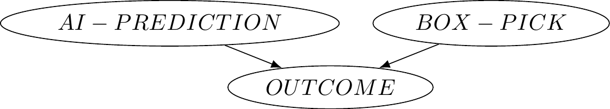

We have emphasized the importance of distinguishing between that which is in our control and that which is not. After all, it seems to be a constitutive feature of making a decision among a number of choices. If we can’t control something, it hardly seems correct to think that we have a choice in the matter.
Another way of thinking about what is and isn’t in our control is in terms of intervening on the world. That is, when we make a decision by selecting an action, we are intervening on the world by having a causal effect on it. When I choose to study, a different set of worldly facts come about than if I choose to party: if I study, my brain will have some information accessible to it that it would not have if I had partied (not to mention the lack of consequences from partying). If I go to the park to play frisbe with my friends, a different set of events will unfold than if I had chosen to stay home to work on a project. If I pick the one box in the Newcomb problem that will bring about a different result than if I had picked the two box option.
We have to be careful about how we think about intervention in our decision tables. It can be tempting to think that by intervening we are shaping the world to our will, but that’s not quite right, or at least not that simple. A better way is to imagine that the world is like an agent that has already selected which column in a table is true, but we are uncertain about what the world has selected. The action that we then select intervenes by narrowing down the set of possible outcomes by selecting a particular row. The world then “reveals” what it had already selected just before we made our choice, and the outcome then becomes known to us.
There have been some recent developments in modeling the idea of interventions. These include the idea of a causal model.65 Judea Pearl’s book Causality had a big impact on thinking about causal models. Another more recent book of his is The Book of Why. This chapter will introduce the idea of causal models and their respresentations as causal graphs (or networks). After introducing the basic ideas behind causal models, we’ll use them to illustrate that there are different kinds of decisions theories. All of these make use of expected utility, but they differ in their interpretations of how choices intervene.
To start, let’s temporarily assume that the world is perfectly deterministic and that every single cause has a single effect, and every single effect has a single cause. For example, suppose we have the very simple example that you studying for a test guarantees that you pass it, and that passing the test will cause you to win a prize. Here we are implicitly suggesting that if you don’t study then you won’t pass, and that if you don’t pass you won’t get a prize. The way we represent this example is by having a variable for each cause or effect, and each variable can have a set of values. For example, our first variable would be BEHAVIOR and it has two possible values, study or party. Our second variable would be TEST and have values of pass or fail. Our third would be PRIZE with values yes or no. We can then use arrows between these variables to represent their causal connection:
Figure 7.1: Simple causal pathway
Given our assumptions, there is just one way for you to get the prize. You getting the prize depends on you passing the test, and you passing the test depends on you studying. We can express these dependencies using some very simple equations. Let’s use ‘1’ to represent cases of studying, passing, and winning the prize, and we’ll use ‘0’ to represent partying, failing, and not getting a prize. In addition, we’ll read ‘X:=Y’ as ‘the value of X depends on the value of Y’ (note the direction of dependency, which only goes the one way). The following single equation then represents that the PRIZE variable depends on the TEST variable: \[ PRIZE := TEST \] and similarily the TEST variable depends on the BEHAVIOR variable: \[ TEST := BEHAVIOR \] Given these equations, we can imagine there are three ways to ensure that PRIZE = 1.66 Heads up: the first two are weirder than the third. The first, as if by the power of God, is to simply just make PRIZE = 1. This is a bit awkward, for effectively we are ‘’screening off’’ all the upstream causes in the graph as if they didn’t really matter after all. The second, which is less arbitrary (given our other assumptions), is to make TEST = 1. By the equation \(PRIZE := TEST\) this makes PRIZE = 1. But this is still not the way that we’re thinking about our example, particularly give the way we have drawn our simple graph. The only way to make PRIZE = 1 given what is in our control is to set BEHAVIOR to be 1. This in turn makes TEST = 1 given that \(TEST:= BEHAVIOR\) and then PRIZE = 1 given that \(PRIZE:=TEST\). In the causal modeling literature, all three of these possibilities we’ve covered would count as a kind of “intervention”, but what they have in mind is an intervention on the model. What we mean here by ‘intervention’ is being in control of a variable by being able to set its value.
There is, nevertheless, a sense in which getting the prize is in your control, even if you can’t directly intervene on that variable. When we set \(BEHAVIOR\) to 1, that fact, combined with the causal graph, will have guaranteed downstream consequences that ultimately make \(PRIZE\) equal to 1.
The simple scenario we have been working with might remind you of decisions made under certainty. Our primary interest, however, has been dealing with decisions where there is some amount of uncertainty, i.e. where there are some things that are outside of our control that combine with our decision to generate an outcome. For example, suppose you are playing a game where your friend is going to flip a fair coin and you can choose to either bet or not bet while it is in the air. If you bet and the coin lands heads, you win a dollar. If you bet and the coin lands tails, you lose a dollar. And if you choose not to bet at all then you don’t win or lose anything. In our standard matrix representation, this scenario looks like this.
| Heads | Tails | |
|---|---|---|
| Bet Heads | $1 | -$1 |
| Don’t Bet | $0 | $0 |
We can use our graphs to also represent this situation. We’ll have three nodes, one for the possible actions (bet / don’t bet), one for the possible world states (heads / tails), and one for the possible outcomes (the four cells in our table).
Figure 7.2: Causal Pathway for Decisions
In addition to this graph, we can write down the equation that will determine how much money you would receive as the outcome. As the graph suggests, this depends on both your action and the world, though you only have control over the former. We’ll use ‘1’ to represent that you bet and ‘0’ that you don’t, and ‘1’ to represent that the coin turned up heads and ‘-1’ that it did not. The equation is: \[ OUTCOME := ACTION \times WORLD \] Inserting the relevant combinations of values for the actions and world states will output the corresponding values in the outcomes.67 Exercise: What do those values need to be?
We now have three kinds of representations we can make use of.68 That is, tables, graphs, and some equations. The graph representation will be particularly helpful for illustrating some important points.69 Don’t be fooled by the simplicity of the diagrams. They represent a lot of information. In general, a causal graph is a collection of nodes with arrows between them. An arrow represents that a node (a variable) has a direct influence on another node (the one that the arrow is pointing to). The node where the arrow starts is called the parent node, and the arrow where the arrow points is the child node. When there is a chain of arrows, a node can have ‘upstream’ ancestors (parents, parents of parents, parents of parents of parents, etc.), as well as ‘downstream’ descendants. Since the arrows are representing causation, and causation only flows in one direction, the collection of arrows cannot have cycles, i.e. it is never the case that a node can be connected back to itself by following a chain of upstream arrows (nor similarly downstream ones).
An important concept that causal graphs help us illustrate is the idea of a common cause. Let’s suppose that you occassionally suffer from severe headaches. A pretty good indicator of whether you will get one later in the day is if you have “spots” in your vision in the morning. You also notice that on days when you eat a banana in the morning you tend not to get a headache later in the day. Let’s use \(H=1\) to represent that you get a headache, \(H=0\) that you don’t, \(V=1\) that you have spots in your vision, \(V=0\) that you don’t, and \(A=1\) that you ate a banana in the morning and \(A=0\) that you didn’t. The causal graph would look like this.
Figure 7.3: Simple causal pathway
The equation for the value of the headache variable would be: \[ H:= V\times (1 - A) \] It is helpful to see the four relevant possibilities in the form of a table.
| \(V\) | \(A\) | \(H:= V\times (1 - A)\) |
|---|---|---|
| 1 | 1 | 0 |
| 1 | 0 | 1 |
| 0 | 1 | 0 |
| 0 | 0 | 0 |
When we do some reasoning with these representations, we’ll notice that the only time you get a headache is when you have spotty vision but choose not to eat a banana.
Now lets add in an additional consideration. Suppose that you go to the doctor and they note that you are prone to a potassium deficiency. A potassium deficiency, they tell you, can often lead to spots in vision, as well as cravings for bananas (because they are high in potassium!). Suddenly you realize that the days that you had headaches were days when you had both spotty vision in the morning and also had cravings for a banana - but for one reason or another you decided not to eat one. Equipped with this new knowledge, you now make sure you always have bananas on hand so that you can choose to eat one when you have a craving.
Let’s update our causal graph. You’ll notice that a potassium deficiency has two effects, one on spotty vision and one on your choice to eat a banana. Let’s say \(D=1\) means you have a potassium deficiency and \(D=0\) means you don’t.
Figure 7.4: Common cause pathway
TODO: SHOW THE SYSTEM OF STRUCTURAL EQUATIONS (and recall the distinction between a structural equation and a system of them)
If we now consider the possibilities, we’ll notice that you never get a headache. This is because on the days that you would get a headache from spotty vision are days when you have a potassium deficiency, but a potassium deficiency also means that you will eat a banana, and thereby counteract the headache. In our example, spotty vision and eating bananas have a common cause, namely a potassium deficiency.
Causal graphs make it really easy to spot when two or more variables have a common cause. We simply take those nodes and trace the upstream arrows: if the variables all have a common ancestor, then they have a common cause (the variable that is the common ancestor).
When two or more variables have a common cause, those variables will be highly correlated with each other, even though they are not causes of one another. For example, an increase in ice cream sales can be correlated with an increase in pool drownings. We should not think, however, that ice cream sales cause pool drownings (nor for that matter, that pool drownings cause more ice cream sales!). Rather, an increase in ice cream sales and pool drownings have a common cause: an increase in temperature, which tends to cause people to both buy more ice cream and to go swimming (which in some cases unfortunately leads to some people drowning).
Similarly in our case: your spotty vision does not cause you to choose to eat bananas, nor does eating bananas cause your spotty vision. Rather, it is a potassium deficiency that causes both.
Causal models help us gain insight into some of the decision problems we’ve seen. Recall Newcomb’s problem, where a game show host consulted an AI that has profiled you to determine whether to put a million dollars into a second box or not. The payoff table looked like this:
| AI predicts two box | AI predicts one box | |
|---|---|---|
| One box (just A) | $0 | $1,000,000 |
| Two box (A and B) | $1,000 | $1,001,000 |
What this table hides are causal assumptions about the outcomes. We have been insisting that when we set up decision matrices that the rows are the choices or actions available to us that are in our control, and the columns are the world states - the things that we are uncertain about and are out of our control. Using our simple causal pathway diagram to illustrate this, we might think that the following represents the above table:
Figure 7.5: Misleading representation of Newcomb problem
But given the narrative of the scenario, there is a correlation between what the AI predicts and what people choose to do. The reason for this correlation is not an accident - after all it is stipulated that the predictions of the AI are highly reliable (even if it’s not perfect). When the AI makes a prediction on what someone will choose, it is consulting some body of information that we reasonably could put under the umbrella of a person’s character. That is, a person’s character is a guide to what action they are likely to select (their box pick: one or two) as well as what the AI will predict (which leads to world state: $1M in box A or not). So a better respresenation of this situation would be the following causal graph:
Figure 7.6: Newcomb pathway
This representation makes it clear that there is a common cause to the AI’s prediction and your action. If that’s right, then the setup is actually not a legitimate kind of decision making problem, since we are not maintaining that the world states and actions be independent of one another. It is not obvious, however, how we might go about fixing this and numerous proposals exist, some of which we’ll cover in due course.
First, let’s see how some other examples we’ve discussed are like the Newcomb problem. Consider again the situation where you are deciding wether to stay at home to work on a project or to show up to the park to play a game of frisbee with your friends. In that decision problem, the uncertainty involved whether “Annoying Guy” would also show up. Here was the utility table we had.
| Annoying guy stays home | Annoying guy shows up | |
|---|---|---|
| You stay home | 2 | 0 |
| You show up | 3 | 1 |
We additionally suggested that, while you might not like it, you and Annoying Guy are very much alike. In fact, let’s just suppose that you and Annoying Guy are identical twins. What this means for this example is that what you choose to do is correlated with what Annoying Guy does. We can again use a causal graph to model this situation. When we do, we need to decide whether the correlation between your choice and Annoying Guy’s is completely accidental, or whether there is a reason for that correlation. We have suggested that it’s the latter. If we unpack this, it would be again reasonable to think that the correlation reflects a common cause between the two of you: you have similar characters.(And given that we said you are identical twins, the common character could be the effect of having a common physiology, but we leave that out for now). So we might have this kind of causal graph:
Figure 7.7: The Twin Example
We can imagine similar graphs to represent the incorrect way of modeling our test example. When we set it up, we insisted that we had to be careful to understand that what it means for a test to be difficult is independent of the action to study - “difficult” had to be some kind of measure by which an instructor uses to design questions. This is because your studying for the test can affect the perceived difficulty of it, and that would violate our requirement that the world states be independent of the actions. A causal graph makes it clear why we have to be careful: if we’re not, then your choice (study or party) would be the common cause of the outcome! That is, if we’re not careful we would have this:
Figure 7.8: Test Example - Incorrect decision model setup if we insist that world states and acts are supposed to be independent.
But if world states and our choices are independent prior to the outcome, then we should have this:
Figure 7.9: Test Example - Correct decision model setup if we insist that world states and acts are supposed to be independent.
What we might notice is that the Newcomb problem is more like the incorrect test example if we take into account something like a person’s character. Newcomb-like problems all seem to have a kind of causal structure where, if we go back far enough, there are common causes that influence both the world state and our action. That is, if we were to map out causal graphs in more detail, they are likely to end up looking something like this.
Figure 7.10: More realistic causal graphs of decisions
What are we to make of these kinds of situations? Isn’t it true that our choices can impact several different variables in this chain? Regularly choosing to exercise can impact our physiology - that’s the whole point behind training! And in the banana example it can ensure that we don’t get a potassium deficiency, and if we do we still can prevent our headaches. And isn’t it the case that the way we develop our character is by regularly making the kind of choices that correspond to the kind of person we want to be? In the Newcomb problem, we want to be the kind of person that picks the one box, since that’s the kind of information the AI would use to make its prediction, which in turn makes it highly likely that there will be a $1M in the box! Do these kinds of considerations mean the world state is in a person’s control after all?
We have been using the idea of control in a binary (on/off) kind of way, but as the causal graph above suggests, what is and isn’t in our control might not be such a clear thing. Perhaps a better way to think of control is that it comes in degrees. Towards the left side of the causal graph are things we have less control over, like our physiology, and towards the right are things that we have more control over, like our behavior in a particular moment.
Whether control is binary or comes in degrees, what we are drawing attention to is a question about where the locus of a choice is. We will see shortly that how one answers this question will largely determine the type of decision theory one ends up endorsing.
It is reasonable to suggest that rationality has a kind of unity. We started our analysis of decision making by defining instrumental rationality - an action is more or less rational depending on how well it helps achieve some goal or aim. Similarly, there is a principle that connects what is possible for us to do and what we ought to do: if something is not in our control to do, then it’s false to say that we have an obligation to do it. One way to wrap up some of these considerations is with a kind of “enkrasia” principle along the following lines:
(Unity of Rationality) It is rational to do X if and only if: i) it is rational to plan to do X, and ii) it is rational to have character traits that lead to planning to do X, and iii) it is rational to have the kind of physiology that allows for the development of such character traits, and so on.
If the unity of rationality is true and we are trying to maximize expected utility, then for Newcomb-like problems we should be selecting the analogs of the one-box option. For if we did not, then selecting the two-box option in the moment is a reflection of our broader character, which means the AI would have made that prediction, and so we would be missing out on $1M (and consistently so if we went on the game show multiple times).
The dominance argument suggests, however, that the rational thing to do is to pick the two-box option. How can this be rational if that effectively guarantees that one will be consistently missing out on $1M? There are at least two things to say here. First, one might suggest that the world is imperfect and sometimes it rewards what is irrational. Just because the world rewards the irrational does not detract from the rationality of the choice. (David Lewis has made this sort of response in 1981.)
The second thing one could say is that rationality might not have the sort of unity that is suggested above. That is, perhaps in some situations it is possible that the rationality of doing X is at odds with the rationality of planning to do X, or is at odds with the rationality of having the relevant character traits. That is, if we deny the unity of rationality, one might say that it is perfectly consistent to develop a character that corresponds to being a one-box kind of person, but then in the moment on the game show where one makes the choice, one chooses to two-box at the very last minute. The dominance argument seems to be suggesting something along these lines if the outcome of winning $1M + $1,000 is a live possibility at all.
A related difficulty concerns about our knowledge of what is and is not in our control, as well as our knowledge about the kind of character or physiology we have. In fact, it’s not unreasonable to think in some cases our brains are planning to do something what we aren’t consciously aware of (yet), and so in a sense we might not have knowledge of our own plans. How might that affect our considerations about the unity of rationality? Let’s illustrate with an example.
There is a parasite called toxoplasma gondii that is primarily hosted by cats but affects mammals in general. Infected individuals tend not to show symptoms, but there do exist a wide range of negative effects. Interestingly, infected rats will tend to be less afraid of cats and even be attracted to cat urine, which from the parasite’s perspective is advantageous because that’s how it perpetuates its life-cycle (the larvae develop in rats and then mature in cats, laying more eggs in the excrement of cats which are then picked up by rats).
Consider then a decision agent that knows it’s possible they have toxoplasmosis. Given this possibility, they know that there is some chance that they will experience negative effects from it, but they also know that they are more inclined to adore cats by, e.g., speaking to them, collecting pictures of them, and potentially even petting them. That is, they consider the following causal graph.
Figure 7.11: Toxoplasmosis problem
Let’s assume that while the chances of negative side effects are small, the negative utilities of those side effects are very large, whereas the utilities that come with adoring cats is relatively small in comparison. Should the agent decide to adore cats or not?
If the agent uses the causal graph as is, they might reason that choosing to adore cats is itself evidence of having toxoplasmosis, which in turn makes it more likely that they will have negative effects. Note that their choice does not cause the negative effects. Rather, when they consider the action of adoring cats, they in turn use that as new information about themselves! And that in turn might influence what they end up deciding to do. We don’t yet have the machinery from probability theory to make this more precise, but know that so long as the negative utilities are sufficiently larger than the positive utilities, and the probabilities for negative effects aren’t too small, the agent will choose not to adore cats.
Alternatively, the agent might follow our insistence that there be no common causes between the world states and our relevant choices. So to the extent that they have a choice in adoring cats or not, this will be independent of the already settled fact of whether they have toxoplasmosis or not. To represent this, they modify the causal graph so that they severe the dependence arrow from toxoplasmosis to adoring cats:
Figure 7.12: Toxoplasmosis problem - intervened.
In this way of reasoning, the agent recognizes that adoring cats is evidence that they have toxoplasmosis, but this is already accounted for in the other two nodes and the connection between them. In this reasoning, toxoplosmosis does not cause the choice of adoring cats. So now when they reason about what to do, they recognize that adoring cats always adds some small extra utility (say 1), regardless of whether the world state is that they have toxoplasmosis or not (where toxoplasmosis has a negative utility of 1000, say).
| Has toxoplasmosis | Does not | |
|---|---|---|
| Ignore cats | -1000 | 0 |
| Adore cats | -1000 + 1 | 0 + 1 |
From this perspective, the agent reasons that they should adore cats, since that’s the dominant option.
What we are illustrating with this last example is a question about whether choices, wherever they are located in the causal graphs, can be informative about the very causal graphs we are using to guide our choices.
So we have two kinds of questions, one about where the locus of choice is, and one about whether interventions related to choices are further evidence to be used in our reasoning. It turns out that how we answer these questions will characterize different kinds of decision theories.
The most common decision theory, called causal decision theory (CDT), puts the locus of choice furthest to the right of the causal graph we had above, i.e., a choice for the purpose of standard decision making is what decides the behavior. Variables that are upstream, such as character and physiology, are not part of what is being analyzed, at least not for the purpose of understanding rationality in terms of comparison of options.
On the other extreme of the causal graph, and a more recent addition to the literature, is functional decision theory (earlier known as timeless decision theory). On this decision theory options are compared by considering the furthest upstream points of evaluation. So if that happens to be character, for example, then options are compared by imagining the impacts of interventions (the removal of causal arrows) at those points. In some presentations of FDT, we imagine that we are choosing what kind of robot or set of functions we do best in a decision problem.
A third kind is evidential decision theory (EDT). The idea behind EDT is that we don’t intervene on a causal graph at all when we analyze what to do. Rather, just like in the toxoplasmosis example, we simply conditionalize on the evidence that is captured on the graph. This notion of conditionalization has a technical meaning that is addressed in probability theory. So it is finally time for us to get clear on what we mean when we talk about probabilities.
Here is an example from Derek Parfit (1984): “Suppose that I am driving at midnight through some desert. My car breaks down. You are a stranger and the only other driver near. I manage to stop you, and Ioffer you a great reward if you rescue me. I cannot reward you now, but I promise to do so when we reach my home. Suppose next that I am transparent, unable to deceive others. I cannot lie convincingly. Either a blush, or my tone of voice, always gives me away.” I want to get the major benefit of a ride out of the desert, but actually giving you the reward is a cost to me. So ideally, I would like to be able to formulate a sincere plan to give you the reward, a plan that is sufficiently sincere that you come to believe me and give me a ride out of the desert, but after having gotten the ride I’d rather not follow through on this plan. Using the causal graph model representation, analyze this decision (note that planning happens somewhere between CHARACTER and BEHAVIOR). You may find it helpful to also include the decision table like we have been doing.
Here is an example from Egan (2007): “Paul is debating whether to press the”kill all psychopaths" button. It would, he thinks, be much better to line in a world with no psychopaths. Unfortunately, Paul is quite confident that only a psychopath would press such a button. Paul very strongly prefers living in a world with psychopaths to dying." Represent Paul’s decision problem in a standard decision matrix. Then draw a causal graph diagram for it. Is there a common cause here? This is sometimes presented as a problem for causal decision theory. Explain how that could be.